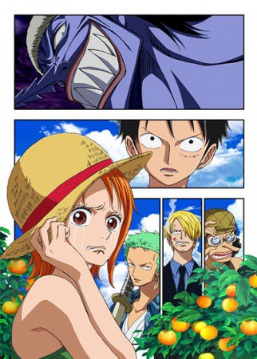

IMDB-Wertung: 8.3 / 10
IMDB-Wertung: 8.3 / 10  Metascore:
Metascore: 
Find showtimes, watch trailers, browse photos, track your Watchlist and rate your favorite movies and TV shows on your phone or tablet!
 IMDB-Wertung: 8.3 / 10 Metascore:
Find showtimes, watch trailers, browse photos, track your Watchlist and rate your favorite movies and TV shows on your phone or tablet!
Jahr: 2012
Dauer: 108 Minuten
FSK:
Land: Japan Studio: Fuji Television NetworkTonspuren:
Untertitel: Deutsch,
Auflösung: 1080p (1920x1080) Größe: 4474 MB
Genre: Action, Abenteuer, Animation/Trick
Regisseur: Katsumi Tokoro
Drehbuch: Frances Goodrich
Soundtrack:
Darsteller:
 Mayumi Tanaka als Monkey D. Luffy
Mayumi Tanaka als Monkey D. Luffy Akemi Okamura als Nami
Akemi Okamura als Nami Kappei Yamaguchi als Usopp
Kappei Yamaguchi als Usopp Hiroaki Hirata als Sanji
Hiroaki Hirata als SanjiDatei: X:\Kinder Anime\One Piece\One Piece Movies\One Piece - Episode of Nami - Koukaishi no Namida to Nakama no Kizuna (2012, FSK, 1920x1080).mkv seit 20.06.2016
Festplatte: Kinder-Filme+Trick
 Es gibt insgesamt 19 Filme in der Gruppe 'Kinder Anime\One Piece\One Piece Movies'
Es gibt insgesamt 19 Filme in der Gruppe 'Kinder Anime\One Piece\One Piece Movies'